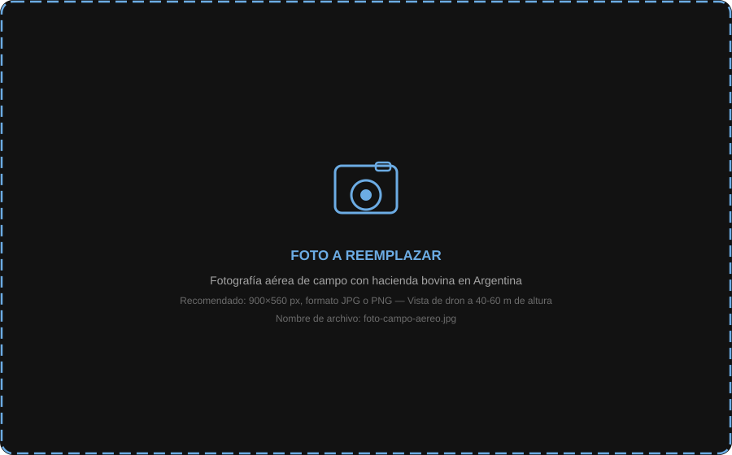

El dashboard DAG reúne todos los datos de tus vuelos en un solo lugar. Chequeás el estado de cada lote, comparás con vuelos anteriores y descargás informes sin necesidad de abrir una planilla.
En la parte superior del dashboard siempre tenés visible: cabezas detectadas, peso promedio, alertas activas y días desde el último vuelo del lote.
El gráfico de peso mensual muestra la evolución del peso promedio de cada lote vuelo a vuelo. Detectás caídas antes de que se conviertan en un problema.
Muestra cuántos animales cayeron en cada categoría el último vuelo. La proporción se actualiza automáticamente.
El mapa muestra el establecimiento con cada lote delineado sobre OpenStreetMap. El color de cada lote indica su estado actual.

Accedés a todos los vuelos del establecimiento, ordenados por fecha. Cualquier vuelo anterior se puede abrir completo.
Cada vuelo procesado se evalúa automáticamente. Si algo sale de los rangos que vos definiste, recibís una notificación.
Se activa cuando >10% de los animales del lote fue clasificado como BAJO PESO. Posible deficiencia nutricional o sanitaria.
Animal individual que perdió más del umbral configurado entre dos vuelos. Queda identificado con su ID.
El conteo difiere >5% respecto al vuelo anterior. Puede indicar movimiento de tropas o falla de detección.
Recordatorio automático cuando un lote lleva más de 30 días sin relevamiento.
Los umbrales de cada alerta son configurables por lote o por establecimiento. Definís vos el porcentaje que dispara la alerta.
Windows, macOS y Linux. Recomendada para subir videos pesados y revisar resultados en detalle. Puede navegar historial en modo offline.
Acceso desde cualquier navegador moderno. Ideal para consultas rápidas desde el celular en el campo o para compartir acceso con el veterinario.
Te mostramos el dashboard con datos reales de un establecimiento similar, o con los datos de tu primer vuelo.